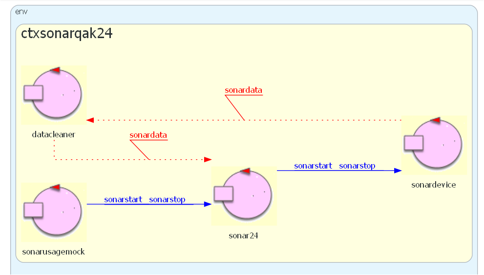

RaspApplCode24¶
Premessa: RaspberrySoftware e RaspBasicCode.
In questa sezione affrontimao i seguenti punti:
Costruzione di un sistena software Sonar-Led technology-dependent su RaspberryPi
Sofware per un Sonarche emette via MQTT la distanza rilevata (SonarMqtt.py) che può essere visualizzata con un grafico ((mqttPlotQakEvents.py)
Sistema SonarAndLed locale technology-dependent per SistemaRilevamento
Software da installare:
pip install paho-mqtt
python -m pip install -U pip
python -m pip install -U matplotlib
Verifica dispositivi¶
Riportiamo qui codice per sperimentare la corretta installazione del Led e del sonar
HC-SR04 su RaspberryPi.
Software per il Led¶
Accensione/spegnimento in bash (NO su BullsEye) |
|
Blinking in bash (NO su BullsEye) |
|
Blinking in C |
|
Blinking in Python |
Software per il Sonar¶
ATTENZIONE: per gli esempi in Python, si fa riferimento a . Si veda Installazione del modulo GPIO per Python3
Software per il |
|
Software per il |
|
Software per il Si veda mqttPlotQakEvents.py come possibile receiver. |
|
Un ricevitore che fa subscribe a TOPIC= unibo/sonar/events per visualizzare su un grafico i dati del Sonar |
|
Un controller che libera il Sonar da compiti di interazione applicativa. Da usarsi in una pipe insieme a LedDevice.py python sonar.py | python ControllerMqtt.py | python LedDevice.py
|
SonarAndLed¶
Sistema SonarAndLed organizzato in funzioni Python
Ciascuna funzione ha una precisa responsbilità
La funzione
doJob()funge da coordinatoreLa funzione
applLogicdefinisce la logica applicativaLa funzione
forwardinvia informazioni via MQTT
Inizializzazione |
import RPi.GPIO as GPIO
import time
import sys
import paho.mqtt.client as paho
### CONFIGURATION FOR LED
GPIO.setmode(GPIO.BCM)
GPIO.setup(25,GPIO.OUT)
### CONFIGURATION FOR SONAR
GPIO.setmode(GPIO.BCM)
GPIO.setwarnings(False)
TRIG = 17
ECHO = 27
GPIO.setup(TRIG,GPIO.OUT)
GPIO.setup(ECHO,GPIO.IN)
### MQTT
brokerAddr="mqtt.eclipseprojects.io"
msg = "msg(sonardata,event,sonar,none,distance(D),N)"
n = 1
client = paho.Client(paho.CallbackAPIVersion.VERSION1,"sonarAndLed")
def init():
GPIO.output(TRIG, False) #TRIG parte LOW
client.connect(brokerAddr, 1883, 60)
print ('Waiting a few seconds for the sensor to settle')
time.sleep(2)
|
Coordinatore e attivatore |
def doJob():
init()
while True:
d = sonarWork()
if( d > 0.0 and d < 150.0 ): # FILTRO
#distance = d
print ( d )
applLogic(d) # LOGICA APPLICATIVA
sys.stdout.flush()
time.sleep(0.25)
if __name__ == '__main__':
print ('sonarAndLed is starting ... ')
try:
doJob()
except KeyboardInterrupt:
print ('sonarAndLed BYE ... ')
|
Logica applicativa |
def applLogic(distance):
if( distance > 0.0 and distance < 5.0 ):
ledOn()
forward(distance)
else:
ledOff()
|
Funzioni operative |
def ledOn():
GPIO.output(25,GPIO.HIGH)
##forward() #QUI???
def ledOff():
GPIO.output(25,GPIO.LOW)
def sonarWork():
GPIO.output(TRIG, True) #invia impulsoTRIG
time.sleep(0.00001)
GPIO.output(TRIG, False)
#attendi che ECHO parta e memorizza tempo
while GPIO.input(ECHO)==0:
pulse_start = time.time()
# register the last timestamp
while GPIO.input(ECHO)==1:
pulse_end = time.time()
pulse_duration = pulse_end - pulse_start
dist = pulse_duration * 17165 #distance = vt/2
return dist
def forward(distance):
global n
n = n + 1
client.publish("unibo/sonar/events",
msg.replace("D",str(distance)).replace("N", str(n)))
|
Progetto sonarqak24¶
Goal: sviluppare un componente software che utilizza il SONAR HC-SR04 e che sia in grado di:
ricevere via rete ed eseguire comandi di
sonarstart/sonarstopinviare ad altri componenti software i vaori di distanza rilevati, filtrati in modo che ogni valore
Demesso sia un valore intero tale che0<D<=150
sonarqak24: analisi del problema¶
Disponiamo di codice di basso livello sonar.py che attiva il sonar fisico e scrive sul dispositivo standard di output, a intervalli temporali fissi, i valori della distanza corrente rilevata.
Il codice sonar.py non è in grado di inviare informazioi in rete nè di ricevere comandi di
sonarstart/sonarstop. Ha inoltre una forma di filtraggio dei valori molto limitata.Non si ritiene opportuno modificare il codice di basso livello per rispondere alle esigenze applicative. Si ritiene invece più opportuno procedere in modo top down, partendo dalla definizione di un componente di alto livello, denominato
sonar24e modellato come un Actor capace di gestire i seguenti dispatch:Dispatch sonarstart : sonarstart(X) Dispatch sonarstop : sonarstop(X)
Ricordando i concetti de La Clean Architecture, occorre ora rispondere alla seguente domanda:
come
sonar24?Per motivi di modularità ed estendiblità, si propende per l’uso di un event:
Event sonardata : distance(D)
Eventi di questo tipo si suppongono generati da un altro componente, denominato
sonardevice, anch’esso modellato come un ActorPer motivi di efficienza e per evitare l’inutile trasmissione di eventi via rete, si ritiene opportuno utilizzare il concetto di Attori streamer, e le primitive subscribeTo e emitLocalstream
Il componente
sonardevicepuò incapsulare il codice di basso livello sonar.py e implementare i comandisonarstart/sonarstop, che gli possono essere delegati dasonar24
Ne consegue la seguente Architettura Logica:
La emissione di eventi con emitLocalstream non viene visualizzata. Se fosse emesso con emit si avrebbe: |
{kind=link}
{kind=link}
sonarqak24:progettazione¶
Il componente sonardevice può essere realizzato in due modi:
in modo esplicito, definendo un Actor nel modello applicativo
in modo ‘sommerso’, definendo un CodedQActor come sonarHCSR04Support23.kt
Inoltre un filtraggio più accurato dei valori di distanza può essere ottenuto costruendo una pipe di attori che ha sonardevice come sorgente-dati e un componente dataCleaner che provvede a eliminare dati spuri.
L’architettura logica di progetto diventa:
|  | La emissione di eventi con emitLocalstream viene visualizzata |
{kind=link}
Inoltre, la pipe può essere estesa introducendo un componente terminale distancefilter capace di generare eventi significativi per il livello applicativo, quali ad esenpio:
Event obstacle : obstacle(D)
TODO: affrontare la progettazione del SistemaRilevamento.
Iniziamo com sonarqak24base. I key-points sono:
|
{kind=link}
Una volta verificato che questo sistema minimale funziona, aggiungiamo i comandi di sonarstart/sonarstop
e in componente esplicita a livello di modello di datacleaner, come proposto
nella architettura logica di progetto
Si veda: sonarqak24. I key-points sono:
…